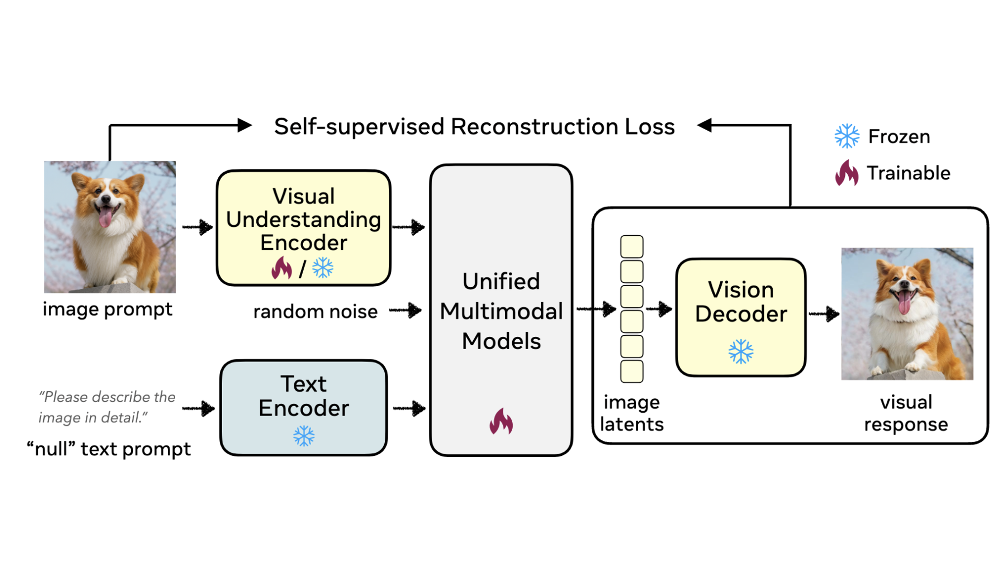
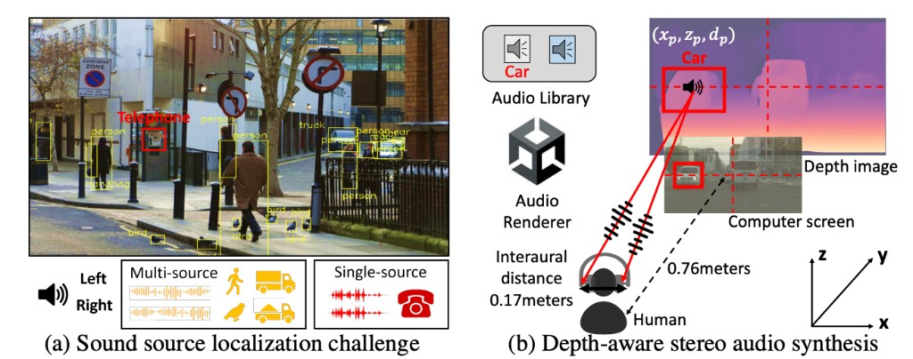
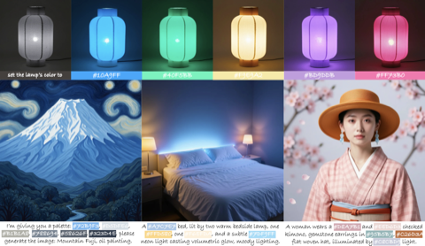
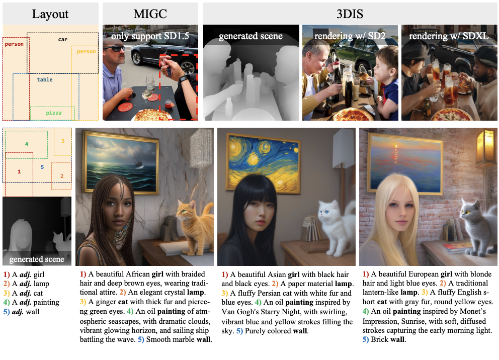

Your browser does not support embedded videos.
Seedream 5.0 series
Core contributor to interactive editing.
tech blog /project page
Publications
The projects below are ones I contributed to substantially. See my Google Scholar for the full publication list.
Foundation Models
OmniTaskonomy: When Does Visual Generation Improve Visual Understanding?
Jiaxin Ge *,
Yiming Qin *,
Ji Xie ,
Haozhe Jiang ,
Xiaochuang Han ,
Junyi Zhang ,
Andrew Dai ,
Yinfei Yang ,
Jitendra Malik ,
Ranjay Krishna ,
Sewon Min ,
Haiwen Feng ,
Le Xue ,
Baifeng Shi ,
Trevor Darrell ,
XuDong Wang
* denotes equal contribution
arXiv
paper
/
code
/
project page
OmniTaskonomy studies when and how visual generation supervision improves visual understanding across tasks.

Reconstruction Alignment Improves Unified Multimodal Models
Ji Xie ,
Trevor Darrell ,
Luke Zettlemoyer ,
Xudong Wang
ICLR 2026
paper
/
code
/
project page
/
中文介绍
/
model
Improving image generation and editing through visual understanding with self-supervised post-training.

Seeing Sound, Hearing Sight: Uncovering Modality Bias and Conflict of AI Models in Sound Localization
Yanhao Jia ,
Ji Xie ,
S. Jivaganesh ,
Hao Li ,
Xu Wu ,
Mengmi Zhang
NeurIPS 2025 (Spotlight)
paper
/
code
SSHS studies modality conflict in sound localization and shows EchoPin improves robustness under conflicting cues.
Application

Paint-Anything: Unified Any-Color Control for Image Generation and Editing
Ji Xie ,
Dewei Zhou ,
Xinyu Huang ,
Zhennan Chen ,
Xun Wang
NeurIPS 2026 / Seed Tech Report
paper
Paint-Anything enables unified, prompt-native 24-bit hex-color control for both image generation and editing in a single model.
VideoCoF: Unified Video Editing with Temporal Reasoner
Xiangpeng Yang ,
Ji Xie ,
Yiyuan Yang ,
Yan Huang ,
Min Xu ,
Qiang Wu
CVPR 2026 (Highlight)
paper
/
code
/
model
/
project page
VideoCoF uses a see-reason-edit pipeline for mask-free, precise video editing and strong long-video extrapolation.
In-Context Edit: Enabling Instructional Image Editing with In-Context Generation in Large-Scale Diffusion Transformer
Zechuan Zhang ,
Ji Xie ,
Yu Lu ,
Zongxin Yang ,
Yi Yang
NeurIPS 2025
paper
/
code (2K Stars🌟)
/
model
Image editing is worth a single LoRA! With only 0.1% training data, ICEdit delivers fantastic instructional image editing.

3DIS: Depth-Driven Decoupled Instance Synthesis for Text-to-Image Generation
Dewei Zhou *,
Ji Xie *,
Zongxin Yang ,
Yi Yang
* denotes equal contribution
ICLR 2025 (Spotlight)
paper
/
code
/
model
3DIS uses depth-driven decoupled instance synthesis for controllable text-to-image generation.
"Reconstruction Alignment Improves Unified Multimodal Models"
Chen Chen and Yinfei Yang
October 2025
SenseTime Scholarship
June 2025
Zhejiang Provincial Higher Mathematics Competition, First Prize
June 2024
Zhejiang Provincial Collegiate Programming Contest, Gold Medal
April 2024, April 2023
International Collegiate Programming Contest (ICPC), Shenyang Site Gold Medal
October 2022
China Collegiate Programming Contest (CCPC), Guangzhou Site Gold Medal
October 2022
Miscellaneous
I have competitive-programming experience in ACM/ICPC and achieved a rating of
2478 on
Codeforces .
You can find my old blog here — it contains my competitive-programming notes :)